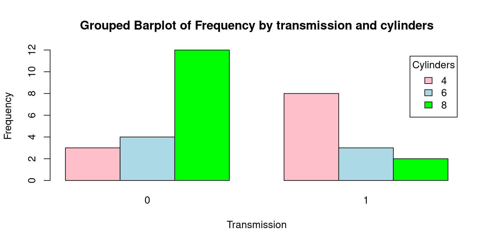
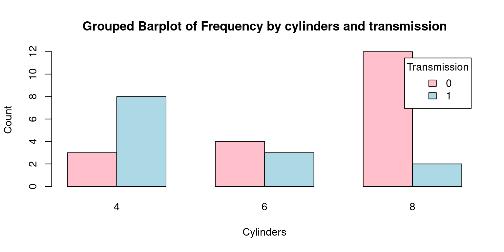
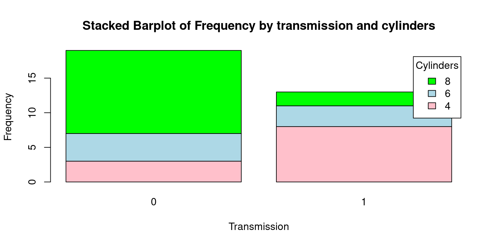
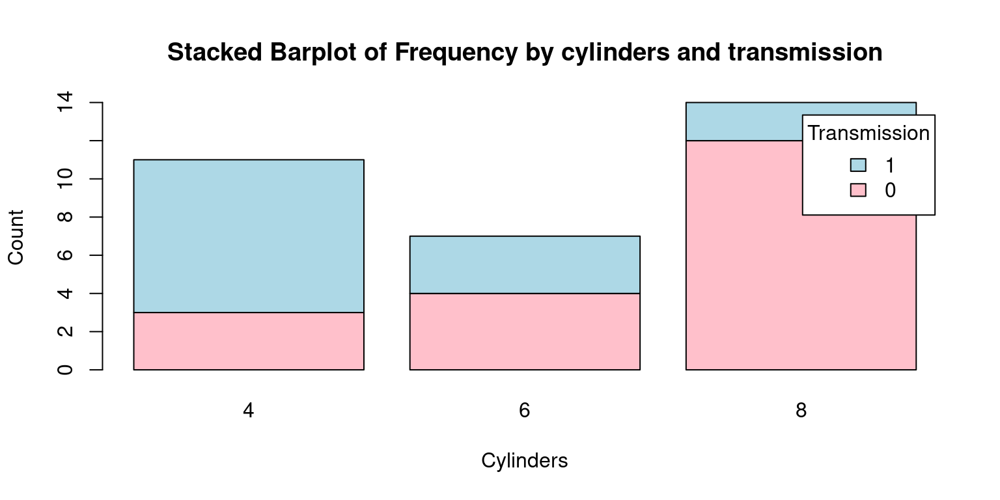
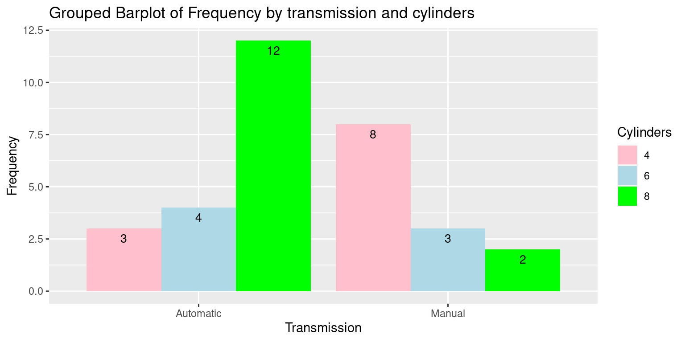
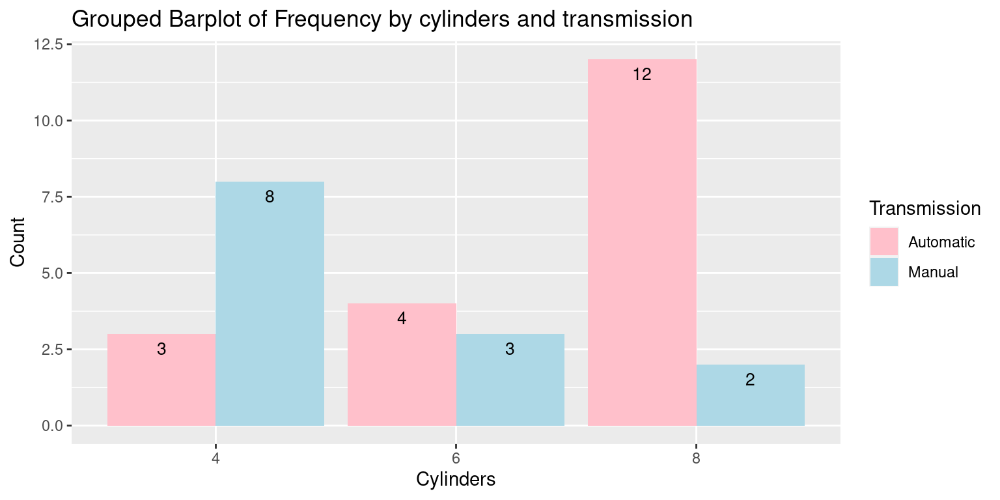
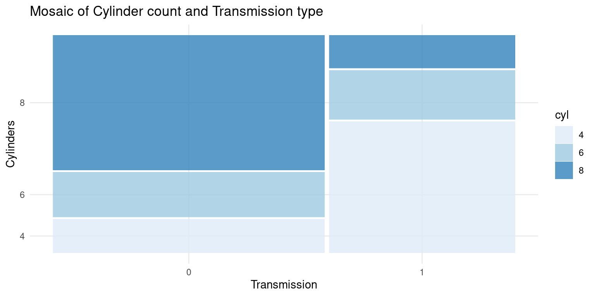

# Load the required libraries, suppressing annoying startup messages
library(tibble)
suppressPackageStartupMessages(library(dplyr))
# Read the mtcars dataset into a tibble called tb
data(mtcars)
tb <- as_tibble(mtcars)
attach(tb)
# Convert several numeric columns into factor variables
tb$cyl <- as.factor(tb$cyl)
tb$vs <- as.factor(tb$vs)
tb$am <- as.factor(tb$am)
tb$gear <- as.factor(tb$gear)Categorical Data (2 of 2)
July 27, 2023 V3.2 (Work in progress)
Overview of Bivariate and Multivariate Categorical Variables
Bivariate and multivariate categorical variables allow us to analyze and comprehend relationships between two or more categorical variables respectively.
Bivariate analysis involves examining the relationship between two variables. For instance, we might examine the relationship between a person’s gender (male, female, or non-binary) and whether they own a car (yes or no). By exploring these two categorical variables together, we can discern potential correlations or associations.
On the other hand, multivariate analysis involves the simultaneous observation and analysis of more than two variables. This form of analysis can help reveal complex interactions and dependencies between multiple variables that cannot be detected in bivariate analyses. For example, we might want to explore the relationship between a person’s gender, car ownership status, and their level of education (high school, bachelor’s, master’s, etc.). Both bivariate and multivariate analyses are essential in statistical and data analysis as they allow us to uncover relationships and patterns in data
Bivariate Categorical Variables
Bivariate categorical data can be understood as a type of data where we are examining two categorical variables simultaneously, where we need to explore relationships or differences between the two factors, using contingency tables.
Contingency Table: A contingency table, also known as a cross-tabulation or crosstab, is a type of table in a matrix format that displays the (multivariate) frequency distribution of the variables. In the case of a univariate factor variable, a contingency table is essentially the same as a frequency table, as there’s only one variable involved. In more complex analyses involving two or more variables, contingency tables provide a way to examine the interactions between the variables [(Agresti, 2007). [1]
Data: Let us work with the same mtcars data from the previous chapter. Suppose we have run the following code:
Frequency Table for Bivariate Categorical Variables
As an illustration, let us investigate the bivariate relationship between the number of cylinders (cyl) and whether the car has an automatic (am) or manual (1 = manual, 0 = automatic) transmission.
- table(): We can use the
table()function to generate a contingency table of these two variables.
- table(): We can use the
table(tb$cyl, tb$am)
0 1
4 3 8
6 4 3
8 12 2In this example, a two-way frequency table of am and cyl is created using the table() function. The frequency of each grouping of categories is displayed in the table that results. As an illustration, there are 8 cars with a manual gearbox and 4 cylinders.
- addmargins(): The
addmargins()function is used to add row and/or column totals to a table.
t0 <- table(tb$cyl, tb$am)
addmargins(t0)
0 1 Sum
4 3 8 11
6 4 3 7
8 12 2 14
Sum 19 13 32The addmargins() function is used to add row and column totals to a table
addmargins() adds both row and column totals to the table. Hence, this command adds both the row and column totals to the contingency table t0.
t0 <- table(tb$cyl, tb$am)
addmargins(t0,1)
0 1
4 3 8
6 4 3
8 12 2
Sum 19 13Here, the 1 in the function call indicates that we want to add row totals. So, this command adds the totals (sum) of each row (representing cyl) to the contingency table t0.
t0 <- table(tb$cyl, tb$am)
addmargins(t0,2)
0 1 Sum
4 3 8 11
6 4 3 7
8 12 2 14In this command, the 2 specifies that we want to add column totals. Thus, it adds the totals (sum) of each column (representing am) to the contingency table t0.
- xtabs(): This function in R provides a more versatile way to generate cross tabulations or contingency tables. It differs from the
table()function by allowing the use of weights and formulas. Here’s how we can use it:
xtabs(~ cyl + am,
data = tb) am
cyl 0 1
4 3 8
6 4 3
8 12 2In the command above, we’ve used xtabs() to construct a cross-tabulation of am and cyl. The syntax ~ cyl + am is interpreted as a formula, signifying that we aim to cross-tabulate these variables. The output is a table akin to what we obtain with table(), but with the added advantage of accommodating more intricate analyses.
An important advantage of xtabs() over table() is its superior handling of missing values or NAs; it doesn’t automatically exclude them, which is beneficial when dealing with real-world data that often includes missing values. [1]
- ftable(): The
ftable()function in R is a powerful tool that offers an advanced way to create and display contingency tables. Here’s an example of its use:
ftable(tb$cyl, tb$am) 0 1
4 3 8
6 4 3
8 12 2In this scenario, we’ve employed the
ftable()function to create a contingency table ofamandcyl. The output of this function is similar to what we get usingtable(), but it presents the information in a flat, compact layout, which can be particularly helpful especially when dealing with more than two variables.One key advantage of
ftable()is that it creates contingency tables in a more readable format when dealing with more than two categorical variables, making it easier to visualize and understand complex multivariate relationships.Do note, like
xtabs(),ftable()also handles missing values or NAs effectively, making it a reliable choice for real-world data that might contain missing values.
- We can also use package
dplyrto generate contingency tables.
library(dplyr)
tb %>%
group_by(cyl, am) %>%
summarise(Frequency = n()) `summarise()` has grouped output by 'cyl'. You can override using the `.groups`
argument.# A tibble: 6 × 3
# Groups: cyl [3]
cyl am Frequency
<fct> <fct> <int>
1 4 0 3
2 4 1 8
3 6 0 4
4 6 1 3
5 8 0 12
6 8 1 2Proportions Table for Bivariate Categorical Variables
- prop.table(): The
prop.table()function is an advantageous tool in R, particularly when it’s necessary to understand the relative proportions rather than raw frequencies. This function converts a contingency table into a table of proportions. Here is how we could utilize this function:
freq <- table(tb$cyl, tb$am)
prop <- prop.table(freq)
round(prop,3)
0 1
4 0.094 0.250
6 0.125 0.094
8 0.375 0.062In the example above, we first generate a frequency table with the
table()function, usingcylandamas our variables. Then, we employ theprop.table()function to convert this frequency table (freq_table) into a proportions table (prop_table).This resulting
prop_tablereveals the proportion of each combination ofcylandamcategories relative to the total number of observations. This can provide insightful context, allowing us to see how each combination fits into the overall distribution. For instance, we could learn what proportion of cars in our dataset have 4 cylinders and a manual transmission.A noteworthy benefit of
prop.table()is its ability to normalize the data, providing a perspective based on relative proportions instead of absolute numbers, which can often provide a clearer view of the underlying patterns in the data.
- We can alternately use package
dplyrto achieve this as follows.
library(dplyr)
tb %>%
group_by(cyl, am) %>%
summarise(Frequency = n()) %>%
mutate(Proportion = Frequency / sum(Frequency)) `summarise()` has grouped output by 'cyl'. You can override using the `.groups`
argument.# A tibble: 6 × 4
# Groups: cyl [3]
cyl am Frequency Proportion
<fct> <fct> <int> <dbl>
1 4 0 3 0.273
2 4 1 8 0.727
3 6 0 4 0.571
4 6 1 3 0.429
5 8 0 12 0.857
6 8 1 2 0.143In the code above, group_by(cyl, am) groups the data by cyl and am, summarise(Frequency = n()) calculates the frequency for each group, and mutate(Proportion = Frequency / sum(Frequency)) calculates the proportions by dividing each frequency by the total sum of frequencies. The mutate() function adds a new column to the dataframe, keeping the original data intact.
- Rounding: If we wanted to round-off the Proportion up to 4 decimal places, we could write the following code.
library(dplyr)
tb %>%
group_by(cyl, am) %>%
summarise(Frequency = n()) %>%
mutate(Proportion = round(Frequency / sum(Frequency), 4))`summarise()` has grouped output by 'cyl'. You can override using the `.groups`
argument.# A tibble: 6 × 4
# Groups: cyl [3]
cyl am Frequency Proportion
<fct> <fct> <int> <dbl>
1 4 0 3 0.273
2 4 1 8 0.727
3 6 0 4 0.571
4 6 1 3 0.429
5 8 0 12 0.857
6 8 1 2 0.143Adding Margins to Proportions Tables
Different proportions provide various perspectives on the relationship between categorical variables in our dataset. We can calculate i) Proportions for Each Cell; (ii) Row-Wise Proportions; (iii) Column-Wise Proportions. This forms a crucial part of exploratory data analysis.
Proportions for Each Cell: This calculates the ratio of each cell to the overall total.
freq <- table(tb$cyl, tb$am)
# Compute cell-wise proportions
cellprop <- prop.table(freq)
# Add totals for each row and column
cellprop <- addmargins(cellprop)
# Round off the results to three decimal places and display as percentages
100*round(cellprop, 3)
0 1 Sum
4 9.4 25.0 34.4
6 12.5 9.4 21.9
8 37.5 6.2 43.8
Sum 59.4 40.6 100.0- Row-Wise Proportions: Here, we compute the proportion of each cell relative to the total of its row.
# Compute row-wise proportions
rowprop <- prop.table(freq, margin = 1)
# Append totals for each row and column
rowprop <- addmargins(rowprop,2)
# Round off the results to three decimal places and display as percentages
100*round(rowprop, 3)
0 1 Sum
4 27.3 72.7 100.0
6 57.1 42.9 100.0
8 85.7 14.3 100.0- Column-Wise Proportions: In this step, we determine the proportion of each cell relative to the total of its column.
# Compute column-wise proportions
colprop <- prop.table(freq, margin = 2)
# Append totals for each row and column
colprop <- addmargins(colprop,1)
# Round off the results to three decimal places and display as percentages
100*round(colprop, 3)
0 1
4 15.8 61.5
6 21.1 23.1
8 63.2 15.4
Sum 100.0 100.0In the examples provided, the prop.table() function is initially applied with the margin parameter to calculate cell, row, and column proportions from the contingency table. We then invoke addmargins() to sum up and include the marginal totals for each row and column. Lastly, the round() function aids in displaying the proportions with one decimal place.
Visualizing Bivariate Categorical Variables
Grouped and stacked bar plots serve as powerful tools for representing and understanding bivariate categorical data, where both variables are categorical in nature.
Grouped bar plots, often referred to as side-by-side bar plots, illustrate the relationship between two categorical variables by placing bars corresponding to one category of a variable next to each other, differentiated by color or pattern. This layout facilitates a direct comparison between categories of the second variable. Grouped bar plots are particularly effective when we are interested in comparing the distribution of a categorical variable across different groups
On the other hand, stacked bar plots present a similar relationship between two categorical variables, but rather than aligning bars side by side, they stack bars on top of one another. This results in a single bar for each category of one variable, with the length of different segments in each bar corresponding to the counts or proportions of the categories of the other variable. Stacked bar plots are advantageous when we’re interested in the total size of groups as well as the distribution of a variable across groups. [2]
4.. Grouped Barplot
# Create a table with count by transmission and number of cylinders
freq <- table(tb$cyl, tb$am)
freq
0 1
4 3 8
6 4 3
8 12 2# Create a Grouped bar plot
barplot(freq,
beside = TRUE,
col = c("pink", "lightblue", "green"),
xlab = "Transmission", ylab = "Frequency",
main = "Grouped Barplot of Frequency by transmission and cylinders",
legend.text = rownames(freq),
args.legend = list(title = "Cylinders"))
Here’s a detailed explanation of each argument passed to the barplot() function:
freq: This is the dataset being visualized, which we anticipate to be a contingency table of am and cyl variables.
beside = TRUE: This argument is specifying that the bars should be positioned next to each other, which means that for each level of am, there will be a distinct bar for each level of cyl.
col = c("pink", "lightblue", "green"): Here, we are setting the colors of the bars to pink, light blue, and green.
xlab = "Transmission" and ylab = "Frequency": These arguments set the labels for the x and y-axes, respectively.
main = “Grouped Barplot of Frequency by transmission and cylinders”: This argument assigns a title to the plot.
legend.text = rownames(freq): This creates a legend for the plot, using the row names of freq as the legend text.
args.legend = list(title = "Cylinders"): This sets the title of the legend to “Cylinders”.
Consider this alternate barplot.
# Create a table with count by transmission and number of cylinders
freqInverted <- table(tb$am, tb$cyl)
freqInverted
4 6 8
0 3 4 12
1 8 3 2# Create the bar plot
barplot(freqInverted,
beside = TRUE,
col = c("pink", "lightblue"),
xlab = "Cylinders", ylab = "Count",
main = "Grouped Barplot of Frequency by cylinders and transmission",
legend.text = rownames(freqInverted),
args.legend = list(title = "Transmission"))
The most significant differences from the previous Grouped Barplot and this one are as follows:
freqInverted: The contingency table’s axes have been swapped or inverted. Hence, the table’s rows now correspond to the am variable (transmission), and its columns correspond to the cyl variable (cylinders).
xlab = "Cylinders" and ylab = "Count": These arguments set the labels for the x and y-axes, respectively. This is a departure from the previous plot where the x-axis represented ‘Transmission’. In this case, the x-axis corresponds to ‘Cylinders’.
legend.text = rownames(freqInverted) and args.legend = list(title = "Transmission"): In the legend, the roles of ‘Transmission’ and ‘Cylinders’ are reversed compared to the previous plot.
To put it succinctly, the main distinction between the two plots is the swapping of the roles of the cyl and am variables. In the second plot, ‘Cylinders’ is on the x-axis, which was occupied by ‘Transmission’ in the first plot. This perspective shift helps to understand the data in a different light, adding another dimension to our exploratory data analysis. [2]
- Stacked Barplot
# Create a table with count by transmission and number of cylinders
freq <- table(tb$cyl, tb$am)
freq
0 1
4 3 8
6 4 3
8 12 2# Create a Stacked bar plot
barplot(freq,
beside = FALSE,
col = c("pink", "lightblue", "green"),
xlab = "Transmission", ylab = "Frequency",
main = "Stacked Barplot of Frequency by transmission and cylinders",
legend.text = rownames(freq),
args.legend = list(title = "Cylinders"))
There are a few key differences between this Stacked Barplot and the original Grouped Barplot:
beside = FALSE: In the original code, beside = TRUE was used to generate a grouped bar plot, where each set of bars corresponding to each transmission type (automatic or manual) were displayed side by side. However, with beside = FALSE, we obtain a stacked bar plot. In this plot, the bars corresponding to each cylinder category (4, 6, or 8 cylinders) are stacked on top of one another for each transmission type.
main = "Stacked Barplot of Frequency by transmission and cylinders": The title of the plot also reflects this change, mentioning now that it’s a stacked bar plot instead of a grouped bar plot.
Finally, here is a second Stacked Barplot, corresponding to the second Grouped Barplot discussed above.
# Create a table with count by transmission and number of cylinders
freqInverted <- table(tb$am, tb$cyl)
freqInverted
4 6 8
0 3 4 12
1 8 3 2# Create the bar plot
barplot(freqInverted,
beside = FALSE,
col = c("pink", "lightblue"),
xlab = "Cylinders", ylab = "Count",
main = "Stacked Barplot of Frequency by cylinders and transmission",
legend.text = rownames(freqInverted),
args.legend = list(title = "Transmission"))
- The grouped bar plot helps in comparing the number of cylinders across transmission types side by side, while the stacked bar plot gives an overall comparison in terms of total number of cars, with the frequency of each cylinder type stacked on top of the other. The choice between a stacked and a grouped bar plot would depend on the specific aspects of the data one would want to highlight. Taken together, grouped and stacked bar plots offer visually appealing and intuitive methods for presenting bivariate categorical data, allowing us to understand and analyze relationships between categorical variables in a meaningful way. [3]
- Mosaic plots for Bivariate Categorical Variables
The distribution of two categorical variables in a dataset is displayed graphically in a mosaic plot. Rectangular blocks with sizes proportionate to the number of observations for each combination of the two variables make up the plot. The relative frequency of each category of the second variable within each category of the first variable is represented by segments inside each block.
The interactions between categorical variables can be visualised using mosaic plots, which can also be used to find patterns and associations in large, complicated datasets. They can be used to identify breaks in independence or test hypotheses regarding the connections between the variables. They are especially helpful for examining interactions between two or more categorical variables.
# Load the mtcars dataset
data(mtcars)
# Create a mosaic plot of the data
mosaicplot(table(mtcars$cyl, mtcars$vs),
main = "Cylinder count by engine type",
xlab = "Engine type",
ylab = "vs")
With the help of this code, a mosaic plot of the number of vehicles in the mtcars dataset broken down by cylinder count and engine type will be produced (V-shaped or straight). The mosaicplot() method is used to generate the actual plot, and the table() function is used to generate a table of counts for the cyl and vs variables in the mtcars dataset. A title and axis labels are added using the main, xlab, and ylab variables.
To build a mosaic plot of the categorical data in mtcars that interests you, you can change this code. To plot the variables, simply swap out mtcars$cyl and mtcars$vs for the desired values. Remember that mosaic plots can be used to compare the distribution of categories within several groups.
# Load the vcd package
library(vcd)Loading required package: grid# Create a mosaic plot of mpg (miles per gallon) vs. vs (engine shape)
mosaic(~ cyl + vs, data = mtcars, main = "Mosaic Plot of MPG vs. VS")
The mtcars dataset, a built-in dataset in R that contains data on 32 cars, is initially loaded by this code. The vcd package, which has utilities for making mosaic plots and other kinds of visualisations, is then installed and loaded by the code.
Finally, using the mosaic() function from the vcd package, the code generates a mosaic plot of the mpg (miles per gallon) and vs (engine shape) variables in the mtcars dataset. The resulting plot illustrates how vehicles with V-shaped vs. straight engines have different mpg distributions (vs values of 0 vs. 1, respectively).
Multivariate Categorical Variables
Three Way Relationship
- table()
table(cyl
, gear
, am), , am = 0
gear
cyl 3 4 5
4 1 2 0
6 2 2 0
8 12 0 0
, , am = 1
gear
cyl 3 4 5
4 0 6 2
6 0 2 1
8 0 0 2In this example, a three-way contingency table of cyl, gear, and am is created using the table() function. The frequency of each grouping of categories is displayed in the table that results. One vehicle has four cylinders, three gears, and an automatic transmission, whereas eight vehicles have four cylinders, four gears, and manual transmissions. The resulting table, which has a two-dimensional table for each level of the am variable, is three-dimensional.
- xtabs()
xtabs(~ cyl + gear + am
, data = mtcars), , am = 0
gear
cyl 3 4 5
4 1 2 0
6 2 2 0
8 12 0 0
, , am = 1
gear
cyl 3 4 5
4 0 6 2
6 0 2 1
8 0 0 2In this example, a three-way contingency table of cyl, gear, and am is created using the xtabs() function. The frequency of each grouping of categories is displayed in the table that results. One vehicle has four cylinders, three gears, and an automatic transmission, whereas eight vehicles have four cylinders, four gears, and manual transmissions. The resulting table, which has a two-dimensional table for each level of the am variable, is three-dimensional. The output table matches the one created by the table() function used in the preceding example exactly.
- ftable()
ftable(gear + cyl ~ am
, data = mtcars) gear 3 4 5
cyl 4 6 8 4 6 8 4 6 8
am
0 1 2 12 2 2 0 0 0 0
1 0 0 0 6 2 0 2 1 2In this example, a three-way contingency table of gear, cyl, and am is created using the ftable() function. The frequency of each grouping of categories is displayed in the table that results. One car has four cylinders, three gears, and an automatic gearbox, whereas there are eight cars with four cylinders, four speeds, and manual transmissions. One table exists for each level of the am variable, resulting in a two-dimensional table. Similar to the table created by the xtabs() function used in the preceding example, the output table is produced.
Four Way Relationship
ftable(am + cyl ~ gear + vs
, data = mtcars) am 0 1
cyl 4 6 8 4 6 8
gear vs
3 0 0 0 12 0 0 0
1 1 2 0 0 0 0
4 0 0 0 0 0 2 0
1 2 2 0 6 0 0
5 0 0 0 0 1 1 2
1 0 0 0 1 0 0In this example, we establish a four-way contingency table containing am, cyl, gear, and vs using the ftable() function. The frequency of each grouping of categories is displayed in the table that results. There are two vehicles with a 6-cylinder, 3-gear, automatic transmission, and inline engine, for instance, and three vehicles with four cylinders. The resulting table, which has two two-dimensional tables for each level of the am variable, is four-dimensional.
Visualization of MULTIVARIATE Categorical Variables
# Load the mtcars dataset
data(mtcars)
# Install and load the vcd package (if it's not already installed)
install.packages("vcd")Installing package into '/cloud/lib/x86_64-pc-linux-gnu-library/4.3'
(as 'lib' is unspecified)library(vcd)
# Create a mosaic plot of mpg (miles per gallon) vs. vs (engine shape)
mosaic(~ cyl + vs + gear, data = mtcars, main = "Mosaic Plot of MPG vs. VS")
References
[1] Agresti, A. (2018). An Introduction to Categorical Data Analysis (3rd ed.). Wiley.
Kabacoff, R. I. (2015). R in Action: Data analysis and graphics with R (2nd ed.). Manning Publications.
Wickham, H., & Grolemund, G. (2016). R for Data Science: Import, Tidy, Transform, Visualize, and Model Data. O’Reilly Media.
Hair, J. F., Black, W. C., Babin, B. J., & Anderson, R. E. (2018). Multivariate data analysis (8th ed.). Cengage Learning.
[2] Unwin, A. (2015). Graphical data analysis with R. CRC Press.
Friendly, M. (2000). Visualizing Categorical Data. SAS Institute.
[3]
Healy, K., & Lenard, M. T. (2014). A practical guide to creating better looking plots in R. University of Oregon. https://escholarship.org/uc/item/07m6r
Few, S. (2004). Show me the numbers: Designing tables and graphs to enlighten. Analytics Press.
Friendly, M. (1994). Mosaic displays for multi-way contingency tables. Journal of the American Statistical Association, 89(425), 190-200.